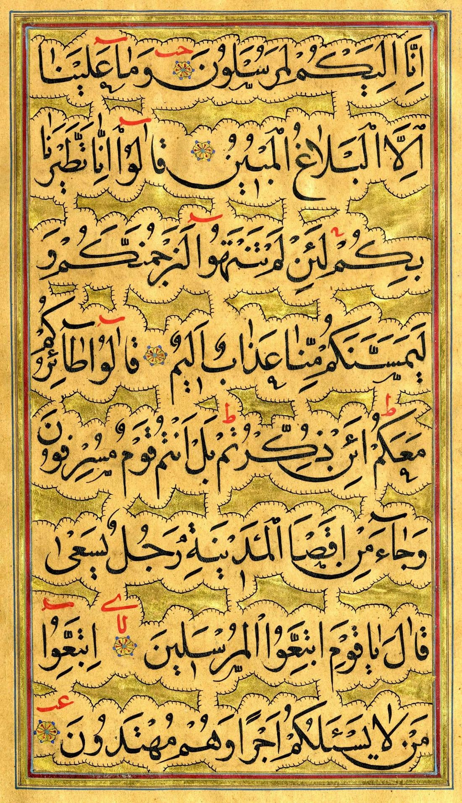

📖 3. Ünite Konu Özeti: Kur'an-ı Kerim


Kur'an-ı Kerim'in İç Düzeni
1️⃣ Kur'an-ı Kerim'in İç Düzeni
Kur'an-ı Kerim, Allah'ın (cc) peygamberler aracılığıyla insanlara gönderdiği vahyi bildiren son kitaptır. 610 yılı ramazan ayında indirilmeye başlanmış, vahiy meleği Cebrail tarafından Hz. Muhammed'e (sav) bildirilmiştir; tamamlanması 23 yıl sürmüştür. Dili Arapçadır.
🗺️ Kavram HaritasıKavram ilişkisi
Bu konunun alt başlıkları ve aralarındaki ilişki
🤔 Sıra SendeDüşün ve cevapla
Kur’an’ın cüzlere ayrılması ne işe yarar?
📌 Aklında Kalsın
- Kur’an 114 sureden oluşur.
- Kur’an 30 cüze ayrılmıştır.
🎯 MEB Kazanımları
Kaynak: Türkiye Yüzyılı Maarif Modeli DKAB Öğretim Programı (2024) — 3. Ünite: Kur'an-ı Kerim
- DKAB.5.3.1 — Kur'an-ı Kerim'in iç düzenini çözümler.
- DKAB.5.3.2 — Kur'an-ı Kerim'in temel özellikleri hakkında bilgi toplar.
- DKAB.5.3.3 — Kur'an-ı Kerim'in ana konularını sınıflandırır.
- DKAB.5.3.4 — Kevser suresini okuyarak yorumlar.
🗺️ Kavram Haritası
Bu ünitenin MEB öğretim programında belirlenen anahtar kavramları, ünite temasıyla bağlantılı olarak aşağıda gösterilmiştir.
Kur'an'ın güzel isimleri: Furkan (doğru ile yanlışı ayırt eden), Nur (yolu aydınlatan), Şifa (kalplere şifa veren), Zikir (yaratıcıyı hatırlatan), Kelam (Allah'ın sözü).
Ayet, Kur'an surelerini oluşturan harf, kelime veya cümlelerdir; durak denilen yuvarlak işaretlerle ayrılır. Mekke'de inen ayetlere Mekki, Medine'de inenlere Medeni ayet denir. Sure, ayetlerden oluşan bölümdür; ilk sure Fatiha, son sure Nâs'tır. En uzun sure Bakara (286 ayet), en kısa sure Kevser'dir (3 ayet). Kur'an-ı Kerim'de 114 sure, 6236 ayet vardır. Cüz, Kur'an'ın yirmi sayfadan oluşan her bir bölümüdür; toplam 30 cüz vardır, başlangıcında cüz gülü bulunur.
Bu üç kavram birbiriyle iç içedir: Birçok ayet yan yana gelerek bir sureyi oluşturur, sureler bir araya gelerek de Kur'an-ı Kerim'in tamamını meydana getirir. Cüzler ise ezberleme ve okumayı kolaylaştırmak için yapılmış sayfa temelli bir bölümlemedir; bu yüzden bazen bir sure birden fazla cüze yayılabilir, bazen de bir cüzün içinde birkaç kısa sure birden bulunabilir.
🤔 Merak Ettin mi?
Kur'an'ın en uzun suresi Bakara (286 ayet), en kısa suresi Kevser'dir (3 ayet).
Kur'an-ı Kerim'in Temel Özellikleri
2️⃣ Kur'an-ı Kerim'in Temel Özellikleri
- İyiye, doğruya ve güzele yönlendirir — "...İyilik edin. Şüphesiz Allah iyilik edenleri sever."
- Kötülüklerden sakındırır — "Sizden, hayra çağıran, iyiliği emreden ve kötülükten meneden bir topluluk bulunsun..."
- Açıklayıcıdır — İnanç esasları, ibadetler, ahlaki değerler, kıssalar ve sosyal hayata dair konuları açıklar.
- İnsanlara yol gösterir (hidayet rehberidir) — "Bu, kendisinde şüphe olmayan kitaptır. Allah'a karşı gelmekten sakınanlar için yol göstericidir."
- İnsanları düşünmeye ve aklını kullanmaya yöneltir — Pek çok ayette "Ey akıl sahipleri!" diye seslenilir.
❌ Yanlış Bilinenler
❌ Bazıları Kur'an'daki ayetlerin iniş sırasına göre dizildiğini sanır.
✅ Kur'an'daki sure/ayet sıralaması iniş sırasına göre değil, Cebrail'in bildirdiği şekilde Peygamberimiz tarafından belirlenen ilahi bir düzenlemedir.
🌍 Gerçek Hayattan Bir Örnek
Kur'an kursunda bir öğrencinin hatim yapması (baştan sona okuması), Kur'an'la kurulan derin bir bağın somut göstergesidir.
⚖️ KarşılaştırmaKarşılaştırma görseli
Kur’an’ı özel kılan
Korunmuşluk
Kapsam
🤔 Sıra SendeDüşün ve cevapla
Kur’an’ın hiç değişmeden gelmesi neden önemlidir?
📌 Aklında Kalsın
- Kur’an son ilahi kitaptır.
- İndirildiği günden beri değişmemiştir.

Kur'an-ı Kerim'in Ana Konuları
3️⃣ Kur'an-ı Kerim'in Ana Konuları
Kur'an-ı Kerim, hem kişisel hayatımızı hem de birlikte yaşadığımız toplumu ilgilendiren her konuya değinen ilahi bir rehberdir. Bu geniş içeriği daha kolay incelemek için ana konular şu başlıklar altında toplanır:
- İnanç — Allah'ın (cc) bildirdiği esasları tereddütsüz kabul etmek. İslam'ın altı temel inanç esası vardır.
- İbadet — Allah'ın emrettiği, insanların yapmakla yükümlü olduğu davranışlar (namaz, oruç, zekât, hac ve daha fazlası).
- Ahlak — İnsanı iyi veya kötü olarak niteleyen huylar ve davranışlar. "Allah şüphesiz adaleti, iyilik yapmayı, yakınlara bakmayı emreder; hayasızlığı, fenalığı ve haddi aşmayı yasak eder."
- Sosyal Hayat — İnsanlar arası ilişkileri ve toplum hayatını düzenleyen ayetler (aile ilişkileri, dürüst alışveriş vb.).
- Kıssa — Geçmiş peygamberler ve kavimlerle ilgili ibret verici olaylar. "Andolsun ki, onların kıssalarında akıl sahipleri için ibret vardır..."
💭 Düşün ve Cevapla
Kur'an'daki kıssalardan hangisi sana en çok ders veriyor? Neden?
👨👩👧 Ailemle Yapıyorum
Ailenle birlikte sevdiğiniz bir sureyi (örneğin Kevser veya Fatiha) Türkçe anlamıyla birlikte okuyup üzerine sohbet edin.
🗺️ Kavram HaritasıKavram ilişkisi
Bu konunun alt başlıkları ve aralarındaki ilişki
🏠 Günlük Hayattan
Kur’an’daki bir kıssayı okumak, geçmişte yaşananlardan bugün için ders çıkarmaktır.
📌 Aklında Kalsın
- Kur’an dört ana konu etrafında ilerler.
- Kıssalar ibret almak için anlatılır.

Bir Sure Öğreniyorum: Kevser Suresi
4️⃣ Bir Sure Öğreniyorum: Kevser Suresi
Kevser suresi, üç ayetten oluşur ve Kur'an-ı Kerim'in en kısa suresidir. "Kevser" kelimesi bolluk, bereket, maddi ve manevi çokluk anlamına gelir. Cahiliye Dönemi'nde Hz. Muhammed'in (sav) oğlu Kasım'ın küçük yaşta vefatı üzerine müşrikler onu "ebter" (nesli kesik) diyerek üzdüler. Bunun üzerine Yüce Allah, Kevser suresini indirdi; Hz. Peygamber'in soyu kızı Hz. Fatıma'nın çocukları Hz. Hasan ve Hz. Hüseyin ile devam etmiştir.
| Okunuşu | Anlamı |
|---|---|
| İnnâ e'taynâ kelkevser | Şüphesiz biz sana bitip tükenmez nimetler verdik. |
| Fesalli lirabbike venhar | Şimdi sen rabbin için namaz kıl ve kurban kes! |
| İnne şânieke hüvel ebter | Asıl soyu gelmeyecek olan, sana karşı nefret duyandır. |
🔍 Derinlemesine Düşünelim
Bu ünitede öğrendiklerini derinlemesine değerlendirmek için kendine şu soruları sor:
- Bu bilgi benim hayatımı nasıl etkiler?
- Bu kavram neden önemlidir?
- Günlük yaşamda bunun karşılığı nedir?
⚖️ Ahlaki İkilem — Sen Olsaydın Ne Yapardın?
Arkadaşın Kur'an-ı Kerim'i çok güzel ezbere okuyor ama anlamını hiç bilmiyor; sen ise yavaş okuyorsun ama anlamını araştırıyorsun. Sence hangisi Kur'an'la daha güçlü bir bağ kurmuş olur? Neden?
✅ Kendimi Değerlendiriyorum
🌍 Hayatta Dene
Bugünün görevi: Bugün Kur'an-ı Kerim'den ezberlediğin kısa bir sureyi (Fatiha, İhlas gibi) güzelce oku ya da yeni bir kısa sureyi öğrenmeye başla.
📌 Aklında Kalsın
- Kevser suresi üç ayetten oluşur.
- Surede verilen nimete karşı ibadet emredilir.
🖥️ Ünite Sunumu
5. SINIF — 3. ÜNİTE
Kur'an-ı Kerim
Din Kültürü ve Ahlak Bilgisi
Ayşe Yazıcı
🎯 Bu Ünitede Neler Öğreneceğiz?
- Kur'an-ı Kerim'in İç Düzeni
- Kur'an-ı Kerim'in Temel Özellikleri
- Kur'an-ı Kerim'in Ana Konuları
- Bir Sure Öğreniyorum: Kevser Suresi
📌 Kur'an-ı Kerim'in İç Düzeni (1/3)
- Kur'an-ı Kerim, Allah'ın (cc) peygamberler aracılığıyla insanlara gönderdiği vahyi bildiren son kitaptır.
- 610 yılı ramazan ayında indirilmeye başlanmış, vahiy meleği Cebrail tarafından Hz.
- Muhammed'e (sav) bildirilmiştir; tamamlanması 23 yıl sürmüştür. Dili Arapçadır.
- Kur'an'ın güzel isimleri: Furkan (doğru ile yanlışı ayırt eden), Nur (yolu aydınlatan), Şifa (kalplere şifa veren), Zikir (yaratıcıyı hatırlatan), Kelam (Allah'ın sözü).
📌 Kur'an-ı Kerim'in İç Düzeni (2/3)
- Ayet, Kur'an surelerini oluşturan harf, kelime veya cümlelerdir; durak denilen yuvarlak işaretlerle ayrılır.
- Mekke'de inen ayetlere Mekki, Medine'de inenlere Medeni ayet denir.
- Sure, ayetlerden oluşan bölümdür; ilk sure Fatiha, son sure Nâs'tır. En uzun sure Bakara (286 ayet), en kısa sure Kevser'dir (3 ayet).
- Kur'an-ı Kerim'de 114 sure, 6236 ayet vardır.
🤔 MERAK ETTİN Mİ?
Kur'an'ın en uzun suresi Bakara (286 ayet), en kısa suresi Kevser'dir (3 ayet).
📌 Kur'an-ı Kerim'in İç Düzeni (3/3)
- Cüz, Kur'an'ın yirmi sayfadan oluşan her bir bölümüdür; toplam 30 cüz vardır, başlangıcında cüz gülü bulunur.
❌ YANLIŞ BİLİNENLER
❌ Bazıları Kur'an'daki ayetlerin iniş sırasına göre dizildiğini sanır.
✅ Kur'an'daki sure/ayet sıralaması iniş sırasına göre değil, Cebrail'in bildirdiği şekilde Peygamberimiz tarafından belirlenen ilahi bir düzenlemedir.
📌 Kur'an-ı Kerim'in Temel Özellikleri
- Kur'an-ı Kerim'in Temel Özellikleri
🌍 GERÇEK HAYATTAN BİR ÖRNEK
Kur'an kursunda bir öğrencinin hatim yapması (baştan sona okuması), Kur'an'la kurulan derin bir bağın somut göstergesidir.
📌 Kur'an-ı Kerim'in Ana Konuları
- Kur'an-ı Kerim'in Ana Konuları
💭 DÜŞÜN VE CEVAPLA
Kur'an'daki kıssalardan hangisi sana en çok ders veriyor? Neden?
📌 Bir Sure Öğreniyorum: Kevser Suresi (1/2)
- Kevser suresi, üç ayetten oluşur ve Kur'an-ı Kerim'in en kısa suresidir. "Kevser" kelimesi bolluk, bereket, maddi ve manevi çokluk anlamına gelir.
- Cahiliye Dönemi'nde Hz. Muhammed'in (sav) oğlu Kasım'ın küçük yaşta vefatı üzerine müşrikler onu "ebter" (nesli kesik) diyerek üzdüler.
- Bunun üzerine Yüce Allah, Kevser suresini indirdi; Hz. Peygamber'in soyu kızı Hz. Fatıma'nın çocukları Hz. Hasan ve Hz.
👨👩👧 AİLEMLE YAPIYORUM
Ailenle birlikte sevdiğiniz bir sureyi (örneğin Kevser veya Fatiha) Türkçe anlamıyla birlikte okuyup üzerine sohbet edin.
📌 Bir Sure Öğreniyorum: Kevser Suresi (2/2)
- Hüseyin ile devam etmiştir.
✅ KENDİMİ DEĞERLENDİRİYORUM
- ☐ Kur'an-ı Kerim'in temel özelliklerini sayabilirim.
- ☐ Mekki ve Medeni ayet farkını açıklayabilirim.
- ☐ Kur'an'ın isimlerinden (Furkan, Nur, Şifa) örnek verebilirim.
- ☐ Kur'an okumaya özen gösteriyorum.
🔑 Önemli Kavramlar (1/2)
🔑 Önemli Kavramlar (2/2)
📖 AYETLERLE DÜŞÜNELİM
"Doğrusu kitabı biz indirdik, onun koruyucusu elbette biziz."
— Hicr suresi, 9. ayet
📖 AYETLERLE DÜŞÜNELİM
"Elif Lâm Mîm. Bu, kendisinde şüphe olmayan kitaptır; muttakiler için bir hidayettir."
— Bakara suresi, 1-2. ayetler
🎬 KONUYLA İLGİLİ VİDEO
Kur'an-ı Kerim'i Tanıyalım
🔍 DERİNLEMESİNE DÜŞÜNELİM
- Bu bilgi benim hayatımı nasıl etkiler?
- Bu kavram neden önemlidir?
- Günlük yaşamda bunun karşılığı nedir?
📝 Ünite Özeti
- Ayet: "Doğrusu kitabı biz indirdik, onun koruyucusu elbette biziz."
Dinlediğiniz İçin Teşekkürler
Başarılar dilerim.
Ayşe Yazıcı — Din Kültürü ve Ahlak Bilgisi Öğretmeni